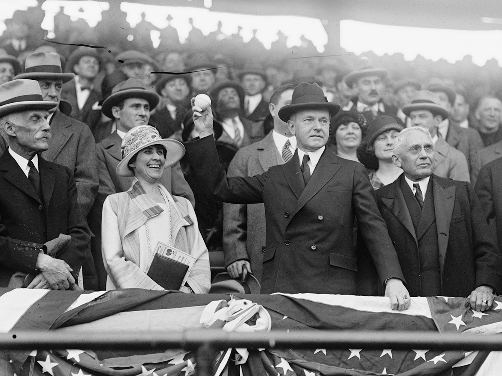
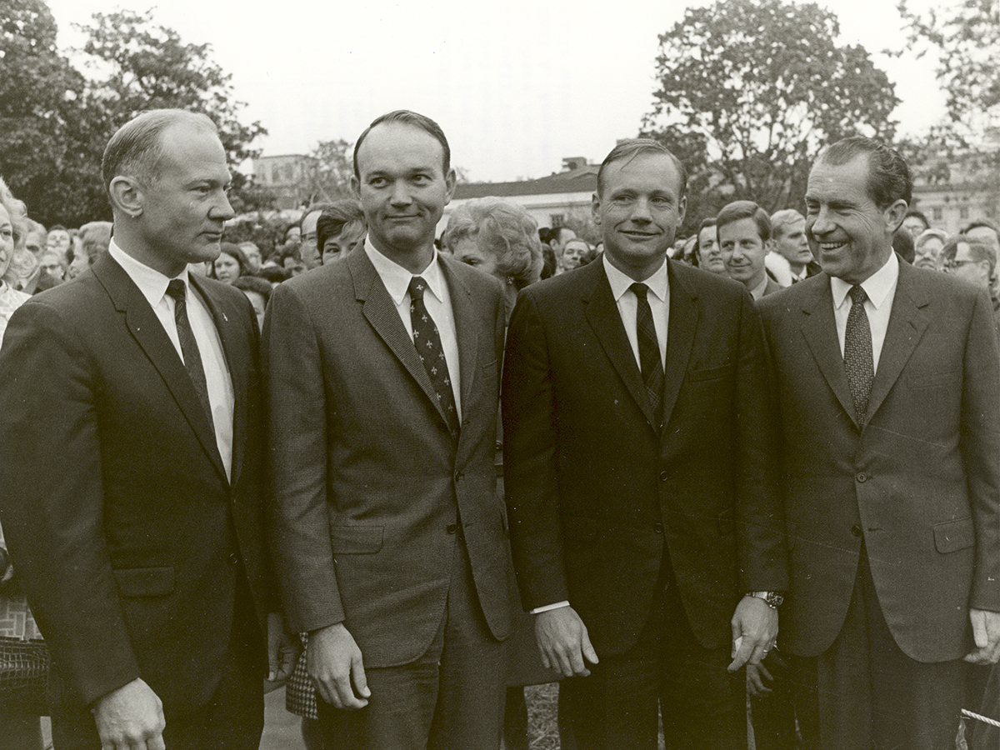
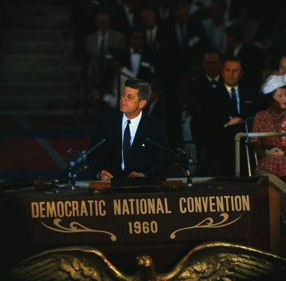

|
 |
 |
As head of state, the president presents the public face of the United States to the rest of the world. The president also carries out ceremonial functions for Americans, such as lighting the national Christmas tree, giving medals to the country’s heroes, and throwing the first pitch at opening day for baseball. Right or wrong, the president is usually the first politician brought up when Americans are asked about government. In many ways, the president becomes linked to the image of the nation.

The president is generally regarded as the leader of his or her political party. This person provides a single public face for a party, and in many ways, leads the direction the government will follow under his or her leadership. Members of the president’s party work hard to elect the president. In turn, they give speeches to help fellow party members who are running for office as members of Congress, governors, and mayors. The president also helps the party raise money. Parties that don’t hold the presidency find themselves more disorganized, as it can be difficult to sort out who would take the lead.